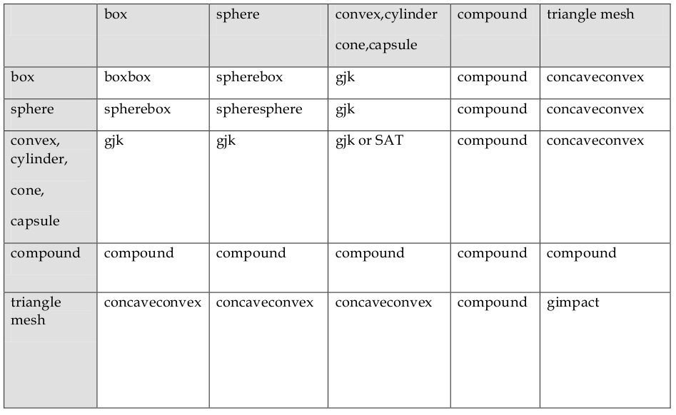

Как работает симуляция физики в играх на примере Bullet Physics
Многие современные игры используют физическую симуляцию. Первое знакомство с физическим движком обычно многообещающее. Мячик отпрыгивает от куба и катится в низ по наклонной, но в процессе работы, когда проект уже почти готов, оказывается, кое-что работает не так как хотелось. Тут можно угробить уйму времени.
И если с Nvidia Physix (привет Unity3D) ничего не поделаешь кроме пары параметров, то Bullet Physics и Box2D доступны в исходных кодах, и от безысходности начинаешь разбираться с тем как что устроено и работает.
Разобраться с тем, как все работает очень полезно. Все игровые физические движки очень похожи. Они все impulse base, что означает то, что в каждый фрейм симуляции все (силы) переводяться в импульсы, импульсы складываются, делятся на массу и прибавляются к скоростям (линейной и вращaтельной) объекта, скорость же определяет насколько объект сдвинется в текущем фрейме симуляции.
И тут встает вопрос, если все так просто, как получается, что можно выложить в столбик кубики и они себе спокойно стоят и не разлетаются?
Я покажу, что за всю эту магию отвечает маленький кусочек кода!
Я предполагаю, что читатель уже знает, что в физическом движке, есть два основных вида симулируемых тел: rigid body (упругое тело, двигается и обладает масой) и static body (неподвижное тело, неподвижно и массой не обладает). Kinematic и soft body не стоят внимания.
Collision Detection
Вся магия начинается когда два тела касаются друг друга. В Bullet Physics используется термин collision.
Система должна определить все тела, которые касаются друг друга в данный фрейм симуляции. В каждом касании (коллизии) может участвовать 2 и больше тел. Поиск всех возможных касаний может быть очень ресурсоёмким.
Broadphase Collision Detection
Первый этап — это найти пересечение AABB коробок. AABB — это две точки, которые описывают коробку внутри которой лежит объект. Идея такая, что если два объекта пересекаются, то и их AABB коробки пересекаются.
Эту проблему в BulletPhysics решает один из трёх алгоритмов. Они реализованы в виде классов, реализующих btBroadphaseInterface.
1. Самый очевидный и неэффективный это btSimpleBroadphase, это простой перебор всех пар O(n^2).
2. btAxisSweep3 работает в ограниченном пространстве. Вы задаёте AABB коробку, внутри которой предполагается будут находиться все объекты. Это может показаться неудобным, но из- за того, что числа с плавающей точкой с увеличением значения теряют точность, вы все равно не сможете симулировать что-либо на расстоянии миллиона единиц так, как если бы вы это делали на расстоянии 10 единиц от центра координат (единица обычно считается метром).
3. btDbvtBroadphase организует все объекты в двух древовидных структурах, одно для статических объектов, другое для динамических (rigid, kinematic) тел.
Narrowphase Collision Detection
После того, как найдены группы объектов, чьи AABB коробки пересеклись, происходит проверка, есть ли пересечение в действительности.
Тут следует вспомнить, что у всех объектов задаётся форма (shape), может быть шар, цилиндр, коробка, выпуклый многогранник для rigid body или просто многогранник для static body. Так же есть составная форма из форм, перечисленных предыдущем предложении.
Для каждой пары определён алгоритм нахождения точек и перпендикуляров пересечения.

Решение
Отлично, все пересечения найдены, что делать дальше? Раз движок у нас impulse based, то следует рассчитать такой импульс, которым пихнуть два коснувшихся объекта, чтобы все выглядело реалистично.
Тут я обещала, что будет маленький кусочек кода. Мне кажется года два назад он был вообще тремя строками, но теперь он выглядит так.
// Project Gauss Seidel or the equivalent Sequential Impulse
void btSequentialImpulseConstraintSolver::resolveSingleConstraintRowLowerLimit(btRigidBody& body1,btRigidBody& body2,const btSolverConstraint& c)
{
btScalar deltaImpulse = c.m_rhs-btScalar(c.m_appliedImpulse)*c.m_cfm;
const btScalar deltaVel1Dotn = c.m_contactNormal.dot(body1.internalGetDeltaLinearVelocity()) + c.m_relpos1CrossNormal.dot(body1.internalGetDeltaAngularVelocity());
const btScalar deltaVel2Dotn = -c.m_contactNormal.dot(body2.internalGetDeltaLinearVelocity()) + c.m_relpos2CrossNormal.dot(body2.internalGetDeltaAngularVelocity());
deltaImpulse -= deltaVel1Dotn*c.m_jacDiagABInv;
deltaImpulse -= deltaVel2Dotn*c.m_jacDiagABInv;
const btScalar sum = btScalar(c.m_appliedImpulse) + deltaImpulse;
if (sum < c.m_lowerLimit)
{
deltaImpulse = c.m_lowerLimit-c.m_appliedImpulse;
c.m_appliedImpulse = c.m_lowerLimit;
}
else
{
c.m_appliedImpulse = sum;
}
body1.internalApplyImpulse(c.m_contactNormal*body1.internalGetInvMass(),c.m_angularComponentA,deltaImpulse);
body2.internalApplyImpulse(-c.m_contactNormal*body2.internalGetInvMass(),c.m_angularComponentB,deltaImpulse);
}
На входе имеем два коснувшихся тела, точку касания с перпендикуляром касания и как результат у нас два импульса, которые должны разрешить коллизию, заставить коробки спокойно и неподвижно лежать одну на другой, а цилиндр и шар, плавно и реалистично катиться по наклонной.
Полезный совет вместо прощания
Трогать этот код не стоит. Например, если вы будете разрабатывать игру с гоночным авто, и машина будет биться о бордюр или стену, и она будет вести себя непредсказуемо и не играбельно, то стоит обратить внимание на перпендикуляр в точке касания. Именно непостоянство и непредсказуемость перпендикуляра в точке касания часто определяет непредсказуемость симуляции.
Вы заглянули в душу современного физического движка и теперь обязаны на нем жениться.